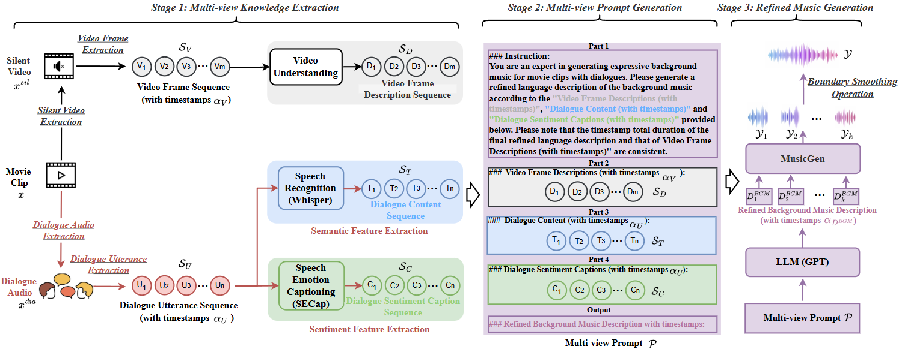

ABSTRACT
Background music generation (BMG) aims to produce expressive music that aligns with video scenes in silent films, playing a significant role in areas such as artistic creation. However, existing methods typically rely solely on visual analysis, neglecting the influence of character dialogues, which often directly shape a movie’s musical style.
To address this gap, we propose a novel framework, termed \textit{\textbf{DialogMusician}}, that integrates dialogue knowledge to generate refined background music. Our approach centers around three key innovations: 1) \textbf{Multi-view knowledge extraction}, which deeply analyzes both the semantic and high-level sentiment features of character dialogues within movie clips, forming a comprehensive knowledge system combined with visual information; 2) \textbf{Multi-view prompt generation}, which integrates multi-view knowledge into a unified prompt representation; 3) \textbf{Refined music generation}, which drives LLM to produce background music descriptions with precise timestamp information, ultimately yielding finely expressive music.
Notably, the entire process is training-free, enabling a fully automated and intelligent pipeline. Additionally, we introduce the first Dialogue-Movie-Music (\textbf{DMM}) dataset, rich in character dialogues, to validate the effectiveness of our method. Both subjective and objective experiments demonstrate that our approach achieves more nuanced and expressive results compared to previous methods. Our dataset and code are available at
https://github.com/DoveChestnut/DialogMusician.
MODEL ARCHITECTURE

Figure: The architecture of our proposed model. The model architecture includes two feature extraction modules on the left, with the proposed attention fusion (AF) and attention transfer (AT) methods in the center, and the backend classifier on the right.
VIDEO DEMO
Video: Demo of partial audio deepfake detection (red segments indicate fake speech)